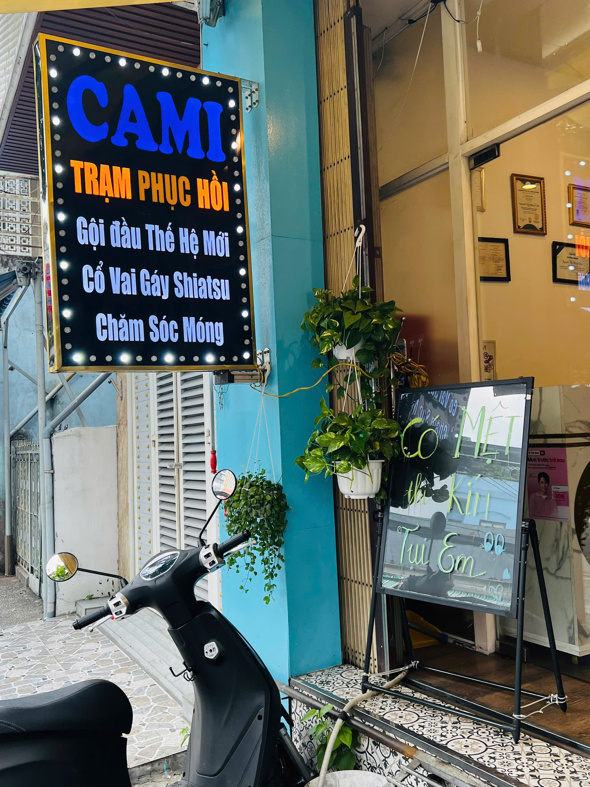
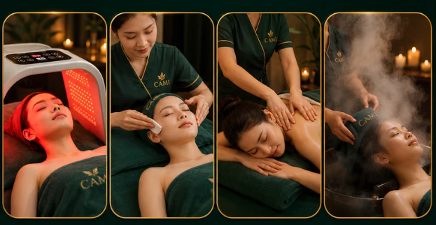

"60 phút không nhìn màn hình, không nghĩ đến deadline — mùi thảo dược nhẹ, tiếng nước chảy xa xa, đôi bàn tay của kỹ thuật viên cứ từ từ ấn vào từng điểm căng trên da đầu... Và lần đầu tiên trong nhiều tuần, tôi ngủ được đến 6 giờ sáng."
Đó là chia sẻ của một khách hàng sau buổi head spa đầu tiên tại CAMI. Không phải điều kỳ diệu. Chỉ là khoa học — và một giờ đồng hồ dành trọn cho bản thân.

Head Spa Là Gì — Và Tại Sao Nó Không Phải Gội Đầu Bình Thường?
Ở Nhật Bản, head spa (ヘッドスパ) đã tồn tại từ hàng trăm năm trước như một nghi thức chăm sóc sức khỏe — không phải làm đẹp. Người Nhật đến head spa không chỉ để gội tóc, họ đến để chữa lành hệ thần kinh sau những tuần làm việc dày đặc.
Điểm khác biệt căn bản: gội đầu thông thường làm sạch tóc và da đầu. Head spa phục hồi môi trường da đầu — cân bằng dầu nhờn, kích thích vi tuần hoàn, loại bỏ lớp bã nhờn tích tụ chặn nang tóc và đồng thời tác động vào hệ thần kinh thực vật thông qua các huyệt đạo trên đầu.
✗ Gội đầu thông thường
- Làm sạch bề mặt tóc
- Không tác động huyệt đạo
- Hiệu quả mất sau 1–2 ngày
- Không cải thiện da đầu
- Thư giãn nhẹ, không sâu
✓ Head Spa tại CAMI
- Làm sạch sâu lỗ chân lông da đầu
- Bấm huyệt Shiatsu chuyên sâu
- Phục hồi kéo dài 5–7 ngày
- Kích thích nang tóc, giảm rụng
- Thư giãn thần kinh thực vật sâu
Tại Sao Head Spa Đang Bùng Nổ Tại TP.HCM?
Năm 2024–2025 chứng kiến làn sóng head spa lan từ Hàn Quốc, Nhật Bản vào Việt Nam theo cách không ai dự đoán được: không phải qua quảng cáo, mà qua hàng triệu video TikTok quay cảnh ASMR tiếng gội đầu.
Nhưng đằng sau con số view tỷ đó là một nhu cầu thực sự sâu xa hơn: người trẻ Việt đang kiệt sức — và họ đang tìm kiếm một loại thư giãn không phải màn hình, không phải rượu bia, không phải ăn uống bù đắp. Họ muốn được chăm sóc thật sự, bằng đôi tay thật sự.
Head spa không chỉ thỏa mãn nhu cầu làm đẹp — nó thỏa mãn nhu cầu được chú tâm.
Da đầu có khoảng 100.000 nang tóc và mật độ dây thần kinh cao hơn bất kỳ vùng da nào khác trên cơ thể. Khi vùng này được kích thích đúng cách, tuyến pineal tiết melatonin sớm hơn — đây là lý do khoa học giải thích tại sao nhiều người ngủ ngon hơn sau head spa, không phải do trùng hợp.

Các Loại Head Spa Tại CAMI Và Sự Khác Biệt
CAMI không có một gói "head spa" duy nhất. Mỗi liệu trình được thiết kế để giải quyết một vấn đề cụ thể:
| Liệu Trình | Phù Hợp Với | Điểm Nổi Bật | Giá |
|---|---|---|---|
| Gội Sạch Thơm | Người muốn thư giãn nhẹ, lần đầu thử | Massage da đầu + gội thảo mộc + sấy dưỡng | 89K |
| Gội Shiatsu Chuyên Sâu | Đau đầu, căng thẳng, cổ vai gáy nhức | Bấm huyệt Shiatsu đầy đủ + gội 2 lần + khai huyệt mặt | 149K |
| Gội Detox Giảm Gàu Ngứa | Da đầu dầu, gàu nhiều, ngứa kinh niên | Tẩy tế bào chết da đầu + detox sâu + cân bằng độ pH | 169K |
| CAMI Relax VIP | Muốn trải nghiệm đầy đủ nhất | Toàn bộ quy trình + gội sạch thơm + body care + đá nóng | 239K |
Quy Trình Head Spa Chuẩn Tại CAMI
Mỗi buổi head spa tại CAMI diễn ra theo một nhịp điệu có chủ đích — từ chậm đến chậm hơn. Không vội vàng, không bỏ bước:
- Khai huyệt vùng mặt — ấn nhẹ các huyệt dọc chân mày, thái dương, khóe mắt để kích thích tuần hoàn và chuẩn bị hệ thần kinh thư giãn
- Làm sạch da đầu lần 1 — dầu gội thảo mộc không sulfate, massage da đầu theo vòng tròn kích thích nang tóc
- Bấm huyệt Shiatsu (gói từ 149K) — chuỗi 12 huyệt từ đỉnh đầu xuống gáy và vai, mỗi điểm giữ 8–12 giây
- Rửa tai bọt tuyết — dịch vụ đặc trưng của CAMI, dùng bọt mịn để làm sạch tai nhẹ nhàng và an toàn
- Ủ tóc phục hồi — mặt nạ tóc thảo mộc ủ ấm 10 phút dưỡng sâu từ ngọn đến gốc
- Sấy và xịt dưỡng tinh dầu — khóa ẩm, tạo độ bóng tự nhiên và lưu hương nhẹ
CAMI sử dụng ghế massage đa điểm chạm thế hệ mới — bạn được massage lưng và toàn thân trong khi kỹ thuật viên gội đầu. Cùng một lúc, cùng một ghế. Bạn không phải nằm chờ, không phải đổi chỗ. Đây là điều khách hàng hay nói "không ngờ lại sướng đến vậy."

Head Spa Có Thật Sự Giúp Tóc Mọc Nhanh Hơn Không?
Câu trả lời là: có, nhưng không theo cách bạn nghĩ.
Head spa không "kích thích mọc tóc" như một số quảng cáo thổi phồng. Những gì nó thực sự làm là loại bỏ các rào cản ngăn tóc phát triển tự nhiên:
- Bã nhờn và tế bào chết tích tụ bít lỗ chân lông → head spa làm sạch, mở thông nang tóc
- Lưu thông máu kém đến da đầu → massage kích thích vi mạch, tăng oxy và dưỡng chất đến nang tóc
- Stress mãn tính là nguyên nhân hàng đầu gây rụng tóc (telogen effluvium) → head spa giảm cortisol, ổn định chu kỳ tóc
Nói cách khác, head spa không làm tóc mọc nhanh hơn — nó giúp tóc không rụng sớm và phát triển đúng chu kỳ tự nhiên.
Bao Lâu Nên Làm Head Spa Một Lần?
- Da đầu dầu / nhiều gàu: 1–2 lần/tuần trong tháng đầu, sau đó duy trì 2 lần/tháng
- Tóc khô, hư tổn do hóa chất: 1 lần/tuần trong 4–6 tuần để phục hồi
- Duy trì sức khỏe tóc và thư giãn: 2–4 lần/tháng là tần suất lý tưởng
- Giảm stress, cải thiện giấc ngủ: Không giới hạn — đây là đầu tư cho sức khỏe tinh thần, không chỉ là làm đẹp
Khách hàng Nguyệt Bích chia sẻ: "Tiệm nhỏ nhưng gọn gàng sạch sẽ. KTV nhiệt tình, tư vấn rõ ràng, tay nghề tốt. Có nhiều gói gội phù hợp cho các loại nhu cầu."
Tìm Head Spa Uy Tín Tại TP.HCM — Những Điều Cần Lưu Ý
Khi chọn địa chỉ head spa, đây là những tiêu chí CAMI khuyến nghị bạn cần hỏi trước khi đặt lịch:
- Kỹ thuật viên có được đào tạo về huyệt đạo và giải phẫu da đầu không?
- Sản phẩm gội đầu có chứng nhận không sulfate, không paraben không?
- Quy trình có bao gồm tư vấn tình trạng da đầu trước buổi không?
- Không gian có đủ riêng tư, yên tĩnh để thực sự thư giãn không?
Tại CAMI Quận 4, mỗi buổi bắt đầu bằng 5 phút tư vấn ngắn — kỹ thuật viên hỏi về tình trạng tóc, vùng đau nhức và mức độ stress của bạn trong tuần — trước khi chọn liệu trình phù hợp nhất.
Lần Đầu Thử Head Spa? Bắt Đầu Từ 89K
Gội Sạch Thơm – Shiatsu – Detox – CAMI Relax VIP · 153 Tôn Đản, Quận 4 · Mở cửa 10:00–21:00
Đặt Lịch Qua Zalo NgayCâu Hỏi Thường Gặp
Head spa là gì?
Head spa là liệu pháp chăm sóc da đầu và tóc chuyên sâu có nguồn gốc từ Nhật Bản, kết hợp làm sạch sâu da đầu, bấm huyệt và massage thư giãn. Khác với gội đầu thông thường chỉ làm sạch bề mặt, head spa phục hồi môi trường da đầu và tác động vào hệ thần kinh giúp giảm stress.
Head spa có giúp tóc mọc nhanh hơn không?
Head spa không kích thích tóc mọc nhanh một cách trực tiếp, nhưng giúp loại bỏ các rào cản ngăn tóc phát triển tự nhiên như bã nhờn bít nang tóc, tuần hoàn máu kém và stress. Nhờ đó tóc không rụng sớm và phát triển đúng chu kỳ.
Bao lâu nên làm head spa một lần?
Với da đầu dầu hoặc nhiều gàu nên làm 1 đến 2 lần mỗi tuần trong tháng đầu, sau đó duy trì 2 lần mỗi tháng. Với mục tiêu thư giãn và chăm sóc tóc, 2 đến 4 lần mỗi tháng là tần suất lý tưởng.
Head spa tại CAMI Quận 4 giá bao nhiêu?
Các gói head spa tại CAMI bắt đầu từ 89K cho gói Gội Sạch Thơm, 149K cho Gội Shiatsu, 169K cho Gội Detox và 239K cho gói CAMI Relax VIP đầy đủ. CAMI tại 153 Tôn Đản, Quận 4, mở cửa 10:00 đến 21:00 mọi ngày.